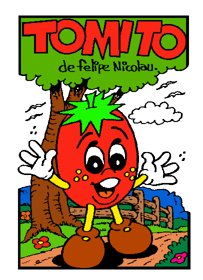
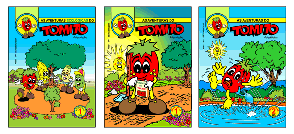
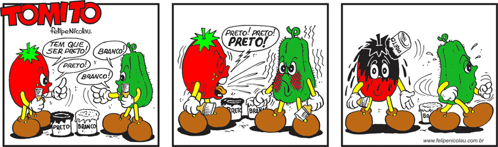
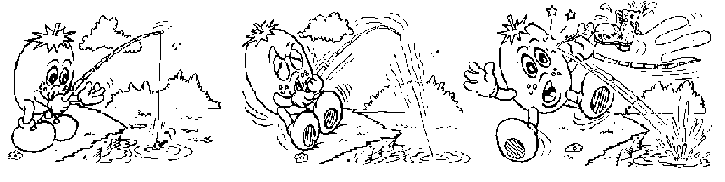
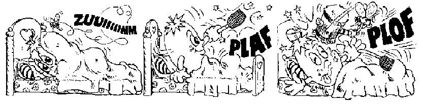

 |

- TOMITO, é a personificação de um tomate.
- Certa vez, na escada que dava acesso a minha casa, nasceu um tomateiro ao lado da parede que dividia o terreno. Era uma planta bonita, viçosa.
- Mas, passou algum tempo até que surgisse um tomate.
- Quando eu estava quase cortando-a, vi no meio das folhas um tomate. Então deixei-o desenvolver-se. Ao ficar vermelhinho, colhi-o, e deixei-o na mesa da cozinha para fazer salada.
- Mas, ele ficou ali até eu retornar a noite do trabalho. Da minha mesa, quando desenhava, via-o em cima da mesa na cosinha. Então esbocei num papel, os primeiros traços daquele que viria a ser o Tomito. Assim, o tomate foi para a salada, o tomateiro não deu mais nenhum tomate, e o Tomito foi para o jornal, e agora está aqui para você conhecê-lo, através destas tiras publicadas em tablóide dominical infantil de jornal, no período de 1975 a 1979.
- Período em que o autor teve alguns problemas de direitos autorais, quando seus bonecos foram utilizados sem autorização, mesmo estando todos registrados na Escola de Belas Artes do Rio de Janeiro. O auxílio veio através do Governo do Paraná que contribuiu para regularizar o assunto.Atualmente o registro pode ser feito diretamente na Biblioteca Pública Municipal das Capitais dos Estados. Quem cuida deste registros nas bibliotecas públicas é o EDA - Escritório de Direitos Autorais. Ali podem ser encaminhados registros de livros e desenhos. Saiba mais sobre o assunto acessando o site da Biblioteca Nacional www.bn.br .
Pode-se também registrar os desenhos, telas, esculturas pela Escola de Belas Artes na Ilha do Fundão, no Rio de Janeiro. Saiba mais sobre o assunto acessando o site da Escola de Belas Artes www.eba.ufrj.br .
- A partir do Tomito foram criados mais de 60 personagens de HQ, frutas, legumes, folhas e outros.



| VOLTAR | 3D | HQ | PINTURAS | ARTE DIGITAL |